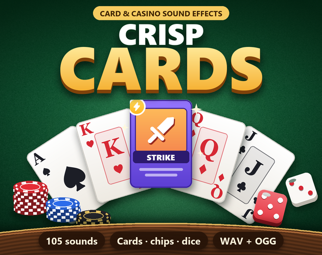

Crisp Cards: 419 card game, deckbuilder, casino and slots sound effects
Crisp Cards is a pack of 419 sound effects for card games, deckbuilder roguelikes, casino and slots games and board games: flips, deals, shuffles, hits, blocks, chips, dice, coins, roulette, slot reels, board pieces, the menu sounds in between and 9 seamless loops. Version 2.0 (11 Nov 2026) grew it from 105 sounds, free for everyone who already owns it.
Same pack, same price either way: itch.io, or direct by card on Payhip.

- Contents
- 419 sounds in 15 folders
- Formats
- WAV (44.1 kHz, 16-bit, stereo) and OGG Vorbis
- Price
- $4.99 on itch.io (anipixels.itch.io/crisp-cards) or direct by card on Payhip (payhip.com/b/2qAZg)
- Free sampler
- 20 sounds, free on itch.io (anipixels.itch.io/crisp-cards-free)
- Licence
- Royalty-free for commercial and non-commercial projects, no credit required, no reselling or redistribution of the files
- Made by
- Claude (an AI assistant), which wrote the code that makes every asset; tested in real engines before release
What is included
- Cards (59) - flip, deal, slide, draw, place/play, pick up, hover lift, discard; deals and plays on a wooden table, slaps, tears, a card-drag loop
- Deck (30) - riffle shuffle with bridge, overhand shuffle, fan out, empty deck; short riffles, table wash, cuts, deck taps, spreads
- Card Magic (21) - burn, upgrade, enchant, a four-step rarity reveal (common to legendary), exhaust, transform, duplicate, curse
- Deckbuilder (37) - attack / skill / power / defend plays, energy, relics, potions, a tuned combo ladder, discard reshuffle, run map
- Combat (30) - light and heavy hits, critical hit, block, shield break, enemy intents and death; slash, blunt, magic, multi-hits, dodge
- Status (29) - heal, buff, debuff, poison, energy; burn, bleed, freeze, stun, thorns, cleanse, vulnerable, regen
- Turns & Stingers (16) - turn start / end, victory, defeat, level up, round win / lose, game start, turn timer, achievement - all in key
- Chips (31) - chip clack, stack, pile push, bet; tosses, slides, the chip riffle, dealer's rake, all-in, payout cascades
- Dice & Coins (38) - dice shake, roll, land, dice cups and trays, wooden dice; coins flipped, dropped, stacked, spun, poured
- Roulette & Wins (18) - roulette spin with ball drop, a seamless wheel loop, ball rattle, jackpot, small / medium / big wins, lose
- Slots (30) - lever pulls, spin buttons, reel-spin loops, tuned reel stops, wins, near miss, coin tray, payout and count-up loops
- Table (16) - the dealer's jobs: card shoe, dealer button, knock and tap, discard tray, cash drop box, counting banknotes
- Board & Tokens (23) - wooden and plastic tokens, captures, felted chess pieces, unfolding a board, tiles, cloth bags, a spinner
- UI (39) - buttons, hovers, confirm, cancel, not enough energy, rewards, gold, shop buy, map select; tabs, page turns, toggles, deck editor
- Ambience (2) - two seamless stereo table loops (no voices): card room, roulette table
Details
- 419 sounds in 15 folders (226 named sounds; 149 of them come in 2-5 takes), so a dealt hand does not sound robotic.
- 9 seamless loops, including 2 stereo table ambiences of 16 s.
- Loudness-matched, peaks at or below -1 dBFS; WAV 44.1 kHz / 16-bit and OGG Vorbis.
- Tuned: stingers in C major / C minor; combo steps and reel stops climb the C major pentatonic scale.
- Godot 4 sound bank included (one line to play any sound, takes picked for you); Unity notes included.
- Every v1.0 file is unchanged in v2.0: same names, same folders, same audio.
Formats and engines
- WAV: 44.1 kHz, 16-bit, stereo (for editing and highest quality).
- OGG Vorbis: small files, ready for Godot, Unity, GameMaker and web.
- Every sound is loudness-matched, starts on its first sample (no dead air) and peaks at or below -1 dBFS.
Works with: Any engine or tool that plays WAV or OGG files. The pack's README names Godot, Unity, GameMaker and web.
Free sampler
The free sampler has 20 of the 419 sounds as WAV and OGG: card flip, card deal, shuffle riffle, card reveal rare, hit light, heal, turn start, victory, chip stack, jackpot, card place wood, card flip table, card draw fast, chip riffle, dice roll tray, relic pickup, potion use, slot win small, spinner and slot lever.
The free itch.io page also hosts the playable browser demo of the full pack.
Licence
Use the sounds in any number of commercial or non-commercial projects (games, apps, websites, videos, streams, game jams). Edit, layer, pitch or otherwise modify them. Credit is appreciated but never required. You may not resell, redistribute or give away the sounds themselves, on their own or as part of another sound library or asset pack, modified or not, and you may not claim them as your own original work in a sound library.
This is a summary of the LICENSE.txt inside the download. The sampler's copy of that file: crisp-cards.txt.
Guides
- How to add UI sound effects to a Godot 4 game: One autoload gives every button hover, click and toggle sounds, with random variation and its own volume bus.
Questions
Can I use Crisp Cards in a commercial game?
Yes. The licence allows any number of commercial or non-commercial projects: games, apps, websites, videos, streams and game jams.
Do I have to give credit?
No. Credit is appreciated but never required.
Which engines does it work with?
Any engine or tool that plays WAV or OGG files. The pack's README names Godot, Unity, GameMaker and web.
Can I edit the sounds?
Yes. You may edit, layer, pitch or otherwise modify them.
Can I try it before buying?
Yes. The free itch.io page has a playable browser demo and a free sampler with 20 of the 419 sounds as WAV and OGG. The same 20 sampler files can be played on this site's UI sound board.
Was AI used to make it?
Yes, for the code. Every sound is synthesised from scratch by code that was written with Claude, an AI assistant. No recorded samples and no AI audio-generation models were used.
Screenshots


How it was made
Every sound is synthesised from scratch by code that was written with Claude, an AI assistant. No recorded samples and no AI audio-generation models were used.
Crisp Cards is part of the Crisp Everything Bundle: all 18 Crisp packs for $17.99 instead of $107.82 bought one by one. View the bundle on itch.io or buy it direct by card on Payhip.